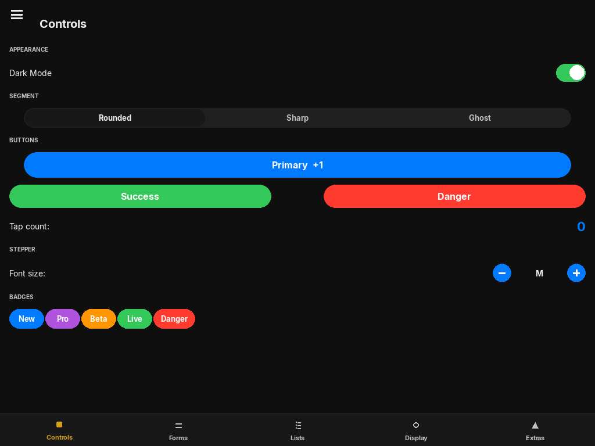

App & UIElement
The application host and the base class shared by every widget and layout.

App
App(
title="App",
width=960,
height=680,
dark_mode=True,
managed_display=True,
)| Parameter | Type | Default | Description |
|---|---|---|---|
| title | str | "App" | Window title bar text (managed mode only). |
| width / height | int | 960 / 680 | Initial window size in pixels. |
| dark_mode | bool | True | Initial theme. Toggle later with app.apply_theme() or app.toggle_theme(). |
| managed_display | bool | True | True: App creates and owns the pygame window and calls the event loop via run(). False: Embedded mode — you supply the surface and drive the loop. |
Key properties
| Property | Type | Description |
|---|---|---|
| root | UIElement | Root layout. Add all top-level widgets and layouts here via app.root.add_child(...). |
| width / height | int | Current window dimensions. Updated automatically on resize. |
| screen | pygame.Surface | None | Active pygame surface. None in embedded mode before attach() is called. |
| on_resize | Callable[[int, int], None] | None | Called with the new (width, height) whenever the window is resized. |
Methods
Replace the root layout. The previous root is discarded. Use this to swap between top-level views.
Set the theme. Calls iOSTheme.update_theme() and invalidates all widget theme caches. Pass None to toggle. Pass True for dark, False for light.
Shorthand for apply_theme(not iOSTheme.dark).
Feed one pygame event into the UI tree. Returns False if the app should quit (QUIT event received).
Feed multiple events. If events is None, calls pygame.event.get() internally. Returns False to quit.
Advance all spring animations by dt seconds, then draw. Returns the actual delta time used. Call inside your own loop in embedded mode.
Start the built-in main loop. Blocks until the window is closed. Only valid when managed_display=True.
Bind an external surface (embedded mode). Must be called before frame() or process_events().
Embedded mode example
import pygame as pg
from pylay import App, VStack, Button
pg.init()
screen = pg.display.set_mode((1024, 768), pg.RESIZABLE)
app = App(managed_display=False)
app.attach(screen)
root = VStack(padding=24, anchor="top_left", x=0, y=0, width=1.0, height=1.0)
root.add_child(Button("Press me", on_click=lambda: print("!"),
anchor="top_left", x=0, y=0, width=150, height=44))
app.set_root(root)
clock = pg.time.Clock()
running = True
while running:
dt = clock.tick(60) / 1000
if not app.process_events():
running = False
app.frame(dt)UIElement
Base class for every widget and layout. Provides the layout constraint resolver, event dispatch, spring animation, and the render pipeline. You rarely subclass this directly — use FloatLayout or PygameCanvas as starting points.
UIElement(
anchor="top_left",
x=0, y=0,
width=100, height=100,
visible=True,
enabled=True,
)| Parameter | Type | Description |
|---|---|---|
| anchor | str | "top_left", "top_center", "top_right", "center_left", "center", "center_right", "bottom_left", "bottom_center", "bottom_right" |
| x / y | int | float | Offset from the anchor point. Positive values move right / down. Float 0.0–1.0 = fraction of parent size. |
| width / height | int | float | Element size. 1.0 = fill parent, 0.5 = 50% of parent, integer = absolute pixels. |
| visible | bool | Hidden elements do not render but still occupy space in layout. |
| enabled | bool | Disabled elements do not receive input events. |
Key properties
| Property | Type | Description |
|---|---|---|
| rect | pygame.Rect | Resolved pixel bounding box. Updated by layout(). Use this for hit testing or custom rendering. |
| children | list[UIElement] | Direct child elements. |
| parent | UIElement | None | Parent element, or None if this is the root. |
| clips_to_bounds | bool | If True, children are clipped to this element's rect. Automatically True on Layout and PygameCanvas. |
Key methods
Append a child to this element. Sets child.parent = self. The child's layout is resolved on the next frame.
Remove a child from this element.
Start a spring animation on any numeric property of this element. response is the natural period in seconds (lower = faster). damping_fraction is bounciness: 1.0 = no overshoot, 0.5 = light bounce.
Resolve layout constraints to self.rect, then propagate to all children. Called automatically each frame — you rarely need to call this manually.